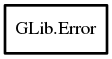

GLib.Error – glib-2.0 Reference Manual
Packages
glib-2.0
GLib
Error
Error
copy
matches
code
domain
message
Error
Object Hierarchy:

Description:
[
Compact
]
[
ErrorBase
]
public
class
Error
The `GError` structure contains information about an error that has occurred.
Namespace:
GLib
Package:
glib-2.0
Content:
Creation methods:
public
Error
(
Quark
domain,
int
code,
string
format, ...)
Creates a new
Error
with the given
domain
and
code
, and a message formatted with
format
.
Methods:
public
Error
copy
()
Makes a copy of
this
.
public
bool
matches
(
Quark
domain,
int
code)
Returns
true
if
this
matches
domain
and
code
,
false
otherwise.
Fields:
public
Quark
domain
public
int
code
public
string
message